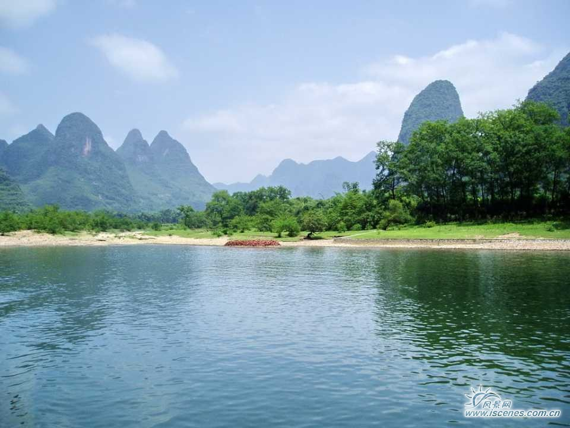

水资源保护
第二十二条 漓江流域国民经济和社会发展规划的编制、重大建设项目的布局，应当与漓江流域水资源条件相适应，对耗水量大和影响漓江流域生态环境的工业建设项目加以限制。
第二十三条 漓江流域市、县人民政府应当采取下列措施，保护地下水资源:
(一)在地下水超采地区，严格控制开采地下水;在地下水严重超采地区，依法划定地下水禁止开采或者限制开采区;
(二)在城市供水管网到达的范围，限期关闭自备水井;
(三)改造城市生活饮用水和工业用水供水管网，制定并逐步实施工业用水、生态环境建设用水和河道生态用水等使用地表水的方案。
第二十四条 漓江流域水资源实行水量的统一配置与调度制度。漓江流域市、县人民政府水行政主管部门会同同级有关部门依据流域水中长期供求规划、流域供水专业规划和当地的实际情况，制定本行政区域的水中长期供求规划，经本级人民政府审查批准后执行。
第二十五条 漓江流域各级人民政府应当采取措施，推行节约用水措施，推广节约用水新技术、新工艺，发展节水型工业、农业和服务业。
第二十六条 为防止漓江流域水土流失，禁止在下列范围开垦种植农作物:
(一)山顶或者山脊部位;
(二)二十五度以上的坡地;
(三)大、中型和小(一)型水库最高蓄水线以外一千米，小(二)型水库最高蓄水线以外五百米的地带;
(四)干渠两侧十度以上坡地和一百米以内地带。
第二十七条 漓江流域水工程及其设施建设应当符合流域水资源管理、水环境保护综合规划和专业规划的要求，符合水生野生动植物种质资源保护要求，并按照法定程序报有关部门审批。 漓江流域蓄水工程应当在保证防汛、抗旱的前提下，兼顾上、下游水质以及生态保护需要，制定防污调控方案，避免蓄水工程所控制河道中的污水集中下泄。
第二十八条 漓江下游河岸和上游容易造成水土流失的河岸应当采取水土保持综合防治措施，减少水土流失。
第二十九条 禁止在地质灾害隐患点、地质灾害易发区、水土流失易发区和漓江干流以及溶江、小溶江、甘棠江、潮田河等主要补水支流河段管理范围内开垦、打井、取土、开矿、采砂和采石。
第三十条 漓江流域实行跨界交接断面水质责任制，漓江流域县级人民政府应当对出界断面水质负责。
第三十一条 漓江流域市、县人民政府有关部门应当对流域的水质状况进行定期监测，建立水质监测档案，并负责组织编制水环境质量报告，定期向社会公布本行政区域的水环境质量状况信息。
第三十二条 漓江流域县级人民政府所在城镇应当建设生活污水处理厂，加强城镇污水接收管网建设，实现城镇污水的达标排放。乡镇、村庄、农(林)场应当建设污水处理设施，其生活污水和生产污水不得直接排入河流。
第三十三条 漓江流域县级人民政府应当建设固体废弃物处置设施，加强固体废弃物排放管理，建设标准化垃圾处理厂(场)，对城镇垃圾进行统一收集、集中处理，实现生活垃圾处理减量化、无害化和资源化。
第三十四条 禁止在漓江干流、支流、水库使用不符合国家规定防污条件的水上运载工具运载油类以及其他有毒有害物品。
第三十五条 禁止向漓江源头、干流、支流和水库等水体倾倒矿渣、有毒有害物质、垃圾、农业投入品废弃物以及其他污染水体的废弃物，禁止向水体丢弃死亡禽畜动物尸体和排放油类或者含病原体的污水及残液。
第三十六条 合理规划漓江沿岸餐饮项目布局，在当地人民政府划定的重点保护河段河堤、河滩、洲岛禁止经营餐饮、自助烧烤和野炊。
第三十七条 保护漓江水生物多样性。禁止使用地笼、电鱼、炸鱼等破坏渔业资源的方法进行捕捞。
禁止将未经渔业行政主管部门批准的水生物种投放漓江。政府有关部门应当定期或者不定期地组织投放鱼种，丰富鱼类种群。
第三十八条 禁止在漓江流域生产、销售和在经营中使用一次性发泡餐盒、不可降解塑料袋等物品。
摘自 http://baike.so.com/doc/2435859-2574969.html